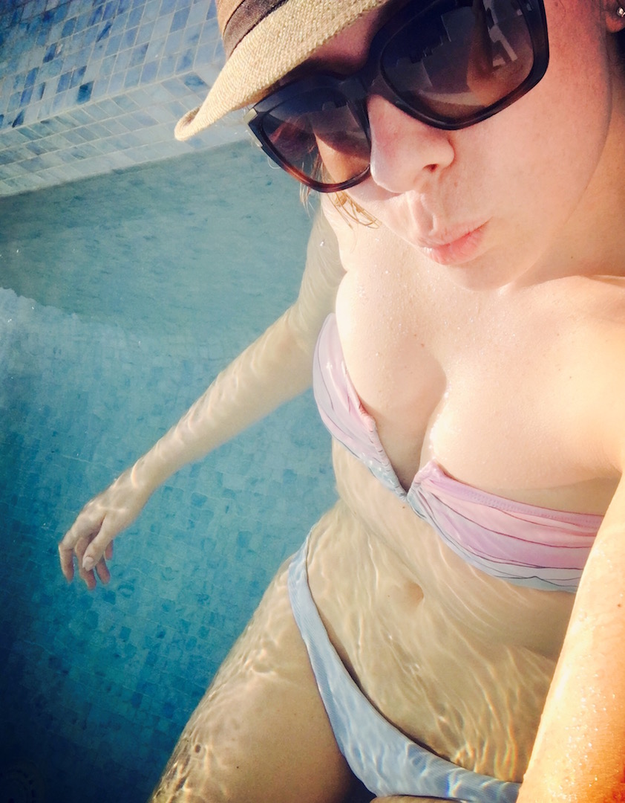
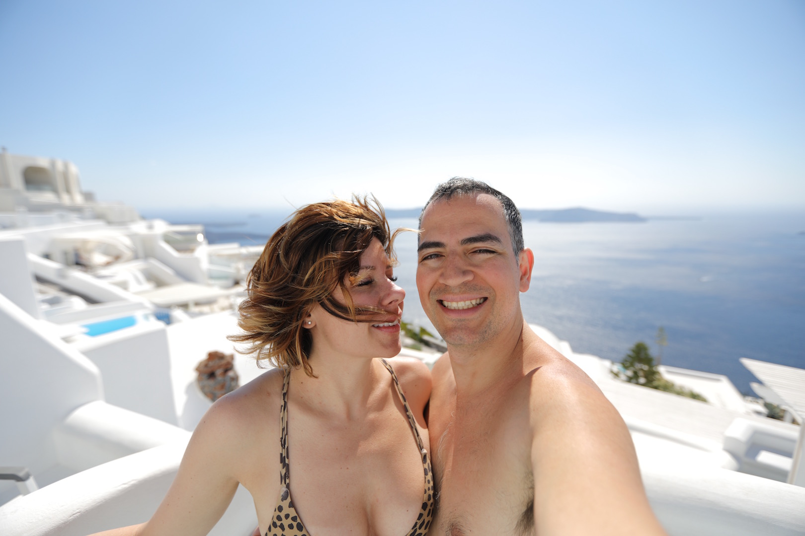
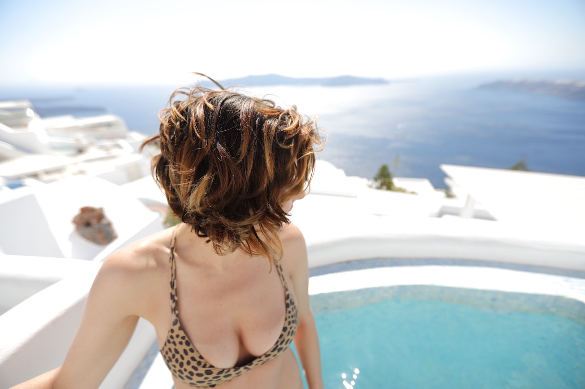
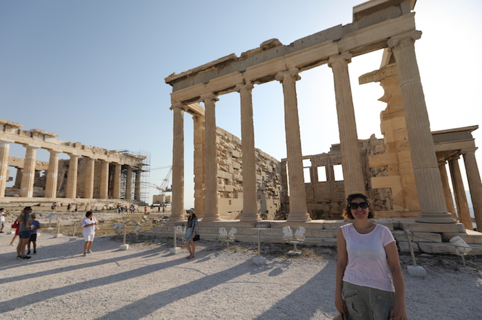
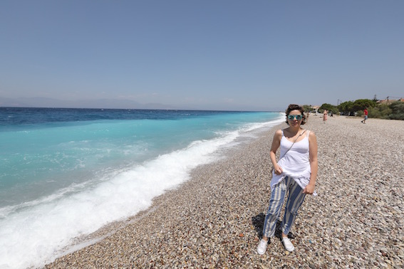
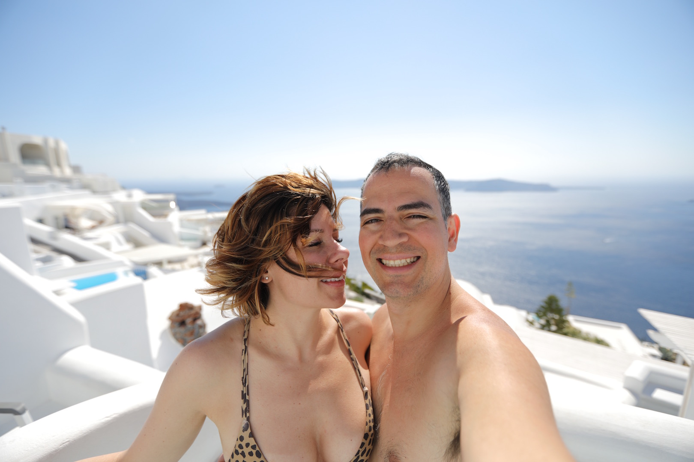
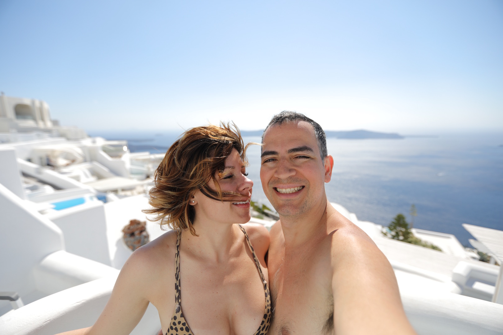

Oia is one of the most photographed islands on the planet. I once heard someone say that if you couldn't take a good photo in Santorini, you should just throw your camera off a cliff
Airport mishaps happen
And when they do, just remember that at least you weren't standing outside in 100+ degree weather for over an hour before you realized that your flight was booked for a week later than you intended. Wait, yes. All of that is correct. Blast!
Ask a donkey for help
We ventured down the side of the island to check out Amoudi bay, and would 100% take a donkey to get back up
Boat me
Amoudi --> Beautiful, Windy, Salty and Charming as Hell
Pooling out

Greeks are forever pronouncing 'jacuzzi' with a 'y' and the 'i' gets dropped entirely, which of course I found to be wonderfully cute.
I do think there is a certain amount of irony in having a view with this vast and beautiful ocean and being completely and totally satisfied in a 'yakuzz' that is 1.5m by 2m. either way, I was down
More From Santorini


Athens
On our way up I heard a girl asking 'Which one is the parthenon?' and later a different girl saying 'we visited the Acrop', le sigh.
I was, at the time however full of humility, as I was suffering a fairly agressive hangover as a result of the previous night's affairs
Good for your bones
We all probably have that one summer in Italy that we were obsessed with gelato and ate it everyday for nearly every meal (because if you eat it as a meal it counts, dammit!) so it won't surprise you that the heat of Greece brought out the gelato-monster of my late teenage years and it was delicious
More In Athens

small town adventure

London
Museum, why?
I typically avoid museums like the plague, I mean... come on. I don't even subject myself to these at home... why start now? However, the design museum is fantastic. And the least museum-e museum
artists rendition of emoji
just in cases where you hadn't seen an emoji, I present to you...
Graduation
Ada ceremony
I have mixed feelings about graduations, on the one hand it's nice to mark the occasion. On the other, it makes me sentimental in ways I have no right being. Maybe anything worthwhile, inevitably inpsires sentiment.


 
